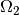
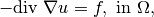
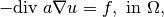
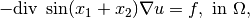
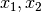
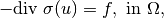
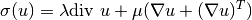
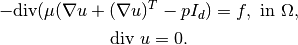
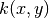
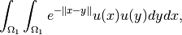

任意の項を計算する - 高水準の汎用的な構築手順 - 弱形式言語¶
このセクションでは、現在の GetFEM++ の主要な汎用構築を紹介します。これは、弱微分方程式の境界値問題の弱定式化を記述するために、弱形式言語に基づいているという意味で、高水準の汎用構築とされています。これは主に、非線形項を記述することが非常に難しい従来の低水準汎用構築（ 任意の項を計算する - 低水準の汎用的な構築手順 参照）の問題を回避するために開発されました。逆に、このバージョンでは記号的な微分アルゴリズムが使用されています。これは、非線形結合問題の近似を多く簡略化します。弱形式のみを記述する必要があるため、接線系は自動的に計算されるためです。さらに、弱形式言語は、最適な計算コストを得るために各積分点の評価の前に最適化された命令にコンパイルされます。
C++で高水準の汎用構築手順を使用するためにインクルードするヘッダーファイルは、 getfem/generic_assembly.h です。
高水準と低水準の汎用構築間の実行時間の差¶
基本的な線形構築の項については、高水準の汎用構築は、低水準の構築よりも高速になります。これは、高水準汎用構築が基本的な最適化された命令にコンパイルを組み込み、単純化を実行するためです。複数の単語を使う場合は、繰り返される項を単純化することにより高速になることがあります。一方、低水準汎用構築が、参照要素に線形変換を伴う要素の線形項を事前計算するメカニズムを組み込んでいるため、いくつかの単純な線形項でより速くなります。もちろん、高水準汎用構築における線形変換のための線形項を基準要素にあらかじめ計算する能力を組み込むこも可能です。しかし、言語の汎用性が高いために複雑になると思われます。結果として、高水準汎用構築では完全積分が許可されないことになります。
弱形式言語構文の概要¶
境界値問題の弱定式化を記述するために、特定の弱形式言語が開発されています。これは、標準的な弱定式化の構造に近いことを意図しており、以下の成分を含みます。
変数名: 変数のリストを与える必要があります。変数は有限要素法で記述されるか、未知変数の単純なベクトルになります。例えば、 u 、 v 、 p 、 pressure 、 electric_field は有効な変数名です。
定数名: 定数のリストを与ることができます。ルールは変数と同じですが、試行関数を定数に関連付けることはできません。
試行関数: 任意の変数に対して使用できます。試行関数は接頭辞 Test_ とそれに続く対応する変数名によって識別されます。例えば Test_u 、 Test_v 、 Test_p 、 Test_pressure 、 Test_electric_field のようなものです。接触モデルの場合、2次の試行関数は Test2_ と表記されその後ろに変数名が続きます。
勾配: 変数または試行関数の空間的な勾配は、 Grad_ を変数名か Test_ 、 Test2_ の接頭辞にすることで表現できます。FEM変数でのみ使用可能です。たとえば、 Grad_u 、 Grad_pressure 、 Grad_electric_field 、および Grad_Test_u 、 Grad_Test2_v です。ベクトルの場合、 Div_u と Div_Test_u は、それぞれ Trace(Grad_u) と Trace(Grad_Test_u) と等価です。
Hessian: 変数または試行関数のHessian行列は、Hess_ を変数名または Test_ または Test2_ の接頭辞にすることで表現できます。FEM変数でのみ使用可能です。たとえば、 Hess_u、 Hess_v、 Hess_p、 Hess_Test2_v、 Hess_Test_p、 Hess_Test_pressure などです。
いくつかの定義済みのスカラ関数( sin(t) 、 cos(t) 、 pow(t,u) 、 sqrt(t) 、 sqr(t) 、 Heaviside(t) 、...)。スカラー関数は、スカラーまたはベクトル/行列/テンソル式に適用することができます。成分ごとに適用されます。 2つの引数( pow(t,u) 、 min(t,u) ...)を持つ関数の場合、 2つの非スカラー引数が渡された場合、次元は同じでなければなりません。たとえば、 “max([1; 2]、[0; 3])” は “[1;3]” を返します。
+, -, *, /, :, ., .*, ./, @, ' となります。
いくつかの定数: pi 、 meshdim （現在のメッシュの次元）、変数 u の大きさ qdim(u) と qdims(u) （固定サイズの変数のサイズとFEM変数のベクトルフィールドの次元）、 Id(n) は 次の単位行列です。
括弧は標準的な方法で操作の順序を変更するために使用できます。例えば (1+2)*4 や (u+v)*Test_u は有効な式です。
ベクトル/行列/テンソルの成分へのアクセスは、左括弧、成分のリスト、右括弧の項をたどることによって行うことができます。たとえば、 [1,1,2](3) は正しく 2 を返します。インデックスは1で始まることに注意してください（C++やPythonインタフェースでも）。コロンを使うことでMatlabのような構文でインデックス先の値を置き換えることができます。
陽なベクトル: 例えば [1;2;3;4] はサイズが4の陽なベクトルです。各成分は式になります。
陽行列: たとえば [1,3;2,4] と [[1,2],[3,4]] は同じ2x2行列を表します。各成分は式になります。
陽な4次テンソル: 例えば入れ子形式の陽な3x2x2x2の4次テンソルは: [[[[1,2,3],[1,2,3]],[[1,2,3],[1,2,3]]],[[[1,2,3],[1,2,3]],[[1,2,3],[1,2,3]]]] です。
X は実要素上の現在の座標です。 X(i) はi番目の要素です。
Normal は領域境界に積分するときの境界に対する外向きの単位法線ベクトル、または mesh_im_level_set メソッドでレベル集合に積分するときのレベル集合への単位法線ベクトルです。後者の場合、法線ベクトルはレベル集合関数勾配の方向にあります。
Reshape(t, i, j, ...): ベクトル/行列/テンソルを変形します。 GetFEM++ のすべてのテンソルはFortranの次数で格納されることに留意してください。
ある数の線形と非線形の演算子（ Trace、 Norm、 Det、 Deviator、 Contract など）。非線形演算子は試行関数には適用できません。
Diff(expression、variable): 変数に対する陽な微分可能性（記号による微分）。
Diff(expression, variable, direction): direction 方向の variable に対して expression の導関数を計算します。
Grad(expression): 可能であれば、与えられた式の勾配を記号的に微分します。
マクロ定義の可能性（model内では、ga_workspaceオブジェクトまたは構築文字列内で直接）。マクロは、字句解析フェーズでインライン展開された有効な式でなければなりません（数回使用すると、計算はコンパイル段階で自動的に因数分解されます）。
Interpolate(variable, transformation): 他の要素や別のメッシュ上の同じメッシュ上で変数を補間したり試行関数を補うことができる強力な演算。 transformation は、現在の点から補間を実行する点までのマップを記述するworkspaceまたはmodelオブジェクトによって格納されるオブジェクトです。この機能は、例えば、周期的な条件を規定するため、または異なるメッシュ上に定義された2つの有限要素空間のモルタル行列を計算するため、またはより一般的には流体構造相互作用のような架空の領域法のために使用できます。
Elementary_transformation(variable, transformation): 要素水準で定義された線形変換を許可します（つまり、Gauss積分点基準では定義できません）。この機能は、主にプレート要素の縮小（回転RT0などの低水準のベクトル要素への投影）を定義するために追加されました。 transformation は、特定の要素の変換を記述するworkspaceやmodelオブジェクトによって格納されるオブジェクトです。
二重積分計算またはカーネル/畳み込み/積分積分による2つの変数の結合のための2つの領域の直接積に対する積分の可能です。これにより、次のような表現が可能になります。
上と  上の2つの領域で
同じにしろ違うにしろ固有のメッシュと積分手法を持つことができます。ここで、
は
は 上で定義された変数です。キーワード Secondary_domain(変数) を使用すると、積分の第2領域上の変数にアクセスできます。
いくつかの基本的な例¶
領域  上のPoisson問題の弱定式化。
上のPoisson問題の弱定式化。

上のDirichletの境界条件 は古典的な表現です
すべての試行関数について が から消えます。構築文字列の対応する式は次の通りです。
Grad_u.Grad_Test_u - my_f*Test_u
ここで、 my_f はソース項の式です。式が次の通りです。

a がスカラー係数の場合、対応する構築文字列は
a*Grad_u.Grad_Test_u - my_f*Test_u
で a がスカラー定数またはスカラー項として宣言されなければなりません。それを陽に記述することも可能です。例えば、問題

では  はメッシュ上の座標で次のように表現することができます。
sin(X(1)+X(2))*Grad_u.Grad_Test_u - my_f*Test_u
別の古典的な方程式は線形弾性です。

等価線形弾性の場合には、ベクトル場 と  が考えられています。弱定式化の記述に対応する構築文字列は以下のように書くことができます。
(lambda*Trace(Grad_u)*Id(qdim(u)) + mu*(Grad_u+Grad_u')):Grad_Test_u - my_f.Test_u
または次の通りです。
lambda*Div_u*Div_Test_u + mu*(Grad_u + Grad_u'):Grad_Test_u - my_f.Test_u
ここでもまた、いくつかの問題を結合するために、係数 lambda と mu に定数、あるいはスカラーフィールドや陽表現、あるいは他の変数からの式を与えますことができます。たとえば、係数が温度場に依存する場合、次のように書くことができます。
my_f1(theta)*Div_u*Div_Test_u
+ my_f2(theta)*(Grad_u + Grad_u'):Grad_Test_u - my_f.Grad_Test_u
ここで、 theta は、Poisson方程式の解である温度です。
Grad_theta.Grad_Test_theta - my_f*Grad_Test_theta
my_f1 と my_f2 はいくつかの与えられた関数です。その場合、2つの関数 my_f1 と my_f2 が線形であっても、結合されているために問題は非線形であることに注意してください。
微分次数と記号による微分¶
構築文字列の微分次数は自動的に検出されます。試行関数が見つからない場合、次数は0（ポテンシャルエネルギー）とみなされ、1次試行関数が見つかった場合、その次数は1（弱定式化）とみなされ、1次と2次の両方の試行関数が見つかると、次数は2（接線系）とみなされます。
構築（次のセクションを参照）を実行するには、次数（0,1または2）を指定する必要があります。次数1の文字列が提供され、次数2の構築が必要な場合は、式の記号微分が行われます。次数0の文字列が提供され、次数1または2の構築が必要な場合も同じです。もちろん、その逆は真ではありません。次数1の式が指定され、次数0の構築が予想される場合、積分は行われません。任意の弱定式化はポテンシャルエネルギーから微分する必要はないので、これは一般に必要ではありません。
汎用構築を使用する標準的な方法は、次数1の式（すなわち、弱定式化）を与えることです。ポテンシャルエネルギーが存在する場合、それを供給することが可能です。しかし、複雑な表現をもたらす接線系を得るためには2回導かれます。非線形問題では、2次式を直接指定することはできません。その理由は、残差を得るために弱定式化が必要であるからです。したがって、対応する次数1の項を持たないで接線項を使用することはできません。
重要な注意事項: 結合した問題については、グローバルポテンシャルはしばしば存在しないことに注意してください。ポテンシャルが直接定義された問題の部分を結合するのは難しい場合があります。これを説明するために、いくつかのパラメータ（たとえば弾性係数）を持つポテンシャルを定義し、その係数が別の変数との変動の変化で構成されている場合、弱定式化はもちろんポテンシャルの導関数ではありません、一般的に意味を持たない係数に関するものです。ポテンシャルの定義が例外でなければならないのはこれが理由です。
構築のためのC ++呼び出し¶
汎用構築を使用する最も自然な方法はmodelオブジェクトの汎用構築要素を使用することです（ 汎用的な構築ブリック要素 節を参照してください）。しかし、高水準汎用構築を単独で使用することも可能です。
汎用構築は getfem/getfem_generic_assembly.h で定義されたオブジェクト getfem::ga_workspace によって駆動されます。
getfem::ga_workspace オブジェクトを定義する方法は2つあります。それはmodelに依存し（ モデル記述と基本モデルブリック要素 を参照）次のように定義する必要があります。
getfem::ga_workspace workspace(model);
model はあらかじめ getfem::model でオブジェクトとしてを定義されています。その場合、考慮する変数と定数はmodelの一部です。第2の方法は次に示す方法によって独立した getfem::ga_workspace オブジェクトを定義する方法です。
getfem::ga_workspace workspace;
その場合、変数と定数をworkspaceに追加する必要があります。これは以下の方法により実行できます:
workspace.add_fem_variable(name, mf, I, V);
workspace.add_fixed_size_variable(name, I, V);
workspace.add_fem_constant(name, mf, V);
workspace.add_fixed_size_constant(name, V);
workspace.add_im_data(name, imd, V);
ここで、 name は変数/定数名です（次の節の名前の制限を参照）。 mf は有限要素法を記述する getfem::mesh_fem オブジェクトです。 I は構築られたベクトル/行列上の変数の間隔を示す gmm::sub_interval クラスのオブジェクトであり、 V は変数/変数の値である getfem::base_vector です。最後のメソッドは、 im_data オブジェクト imd に定義された定数を追加します。これは、 mesh_im オブジェクトの積分点にスカラー/ベクトル/テンソルフィールド情報を格納することを可能にします。
一度宣言され、一度変数と定数が宣言されると、構築文字列を次のようにしてworkspaceに追加することができます。
workspace.add_expression("my expression", mim, rg = all_convexes());
mim に対応するメッシュのオプションの有効な領域が mf にある場合、 mf は getfem::mesh_im オブジェクトと rg です。
前のセクションで説明したように、文字列の順序が自動的に検出され、対応する接線項を得るために記号的な微分が実行されます。
構築文字列がworkspaceに追加されると、以下を呼び出すことができます。
workspace.assembly(order);
order は0（ポテンシャルエネルギー）、1（残差ベクトル）または2（線形問題の接線項または剛性行列）のいずれかでなければなりません。構築の結果は次のように利用できます。
workspace.assembled_potential() // For order = 0
workspace.assembled_vector() // For order = 1
workspace.assembled_matrix() // For order = 2
デフォルトでは、アセンブルされたポテンシャル、ベクトル、およびマトリックスは、構築の開始時にゼロに初期化されます。ただし、増分構築を実行するために、構築ベクトルと行列を外部ベクトルと行列に設定することが可能です（お勧めします）。 2つの方法により構築が可能です。
workspace.set_assembled_vector(getfem::base_vector &V);
workspace.set_assembled_matrix(getfem::model_real_sparse_matrix &K);
そうすることができます。正しい次元のベクトルと行列を与えるように注意してください。
また、次のメソッドにより
workspace.clear_expressions();
付属のすべての式を取り消すことができ、別の構築で同じworkspaceを再利用することができます。
汎用構築を Python/Scilab/Matlab インタフェースから呼び出すこともできます。詳細はインタフェースの gf_asm コマンドを参照してください。
C ++構築の例¶
第1の例として、Poisson問題の構築を紹介します。
剛性行列は次式で与えられ
次のコードでアセンブルされます。
getfem::ga_workspace workspace;
getfem::size_type nbdof = mf.nb_dof();
getfem::base_vector U(nbdof);
workspace.add_fem_variable("u", mf, gmm::sub_interval(0, nbdof), U);
workspace.add_expression("Grad_u.Grad_Test_u", mim);
getfem::model_real_sparse_matrix K(nbdof, nbdof);
workspace.set_assembled_matrix(K);
workspace.assembly(2);
もちろん、 mf はすでに宣言された getfem::mesh_fem オブジェクトであり、 mim はすでに同じメッシュ上に getfem::mesh_im オブジェクトとして宣言されています。変数の値は、問題の線形性のために実際に使用するわけではないことに注意してください。使用されない変数の値として getfem::base_vector(nbdof) を渡すことができます。また、構築-文字列の結果とまったく同じ結果が得られる2つの式は、 "Grad_Test2_u.Grad_Test_u" すなわち、2次式）または "Norm_sqr(Grad_u)/2" （すなわち、ポテンシャル）。 "Grad_u.Grad_u/2" か2次元問題のための "[Grad_u(1), Grad_u(2)].[Grad_Test_u(1), Grad_Test_u(2)]" などでも同じ結果が得られます。しかしながら、0次または2次の表現を使用する特別な理由がなければ、1次の表現（弱定式化）を与えることが推奨されます。
第2の例として、連成問題である非圧縮性弾性の混合問題を考えます

ここで u はベクトル値の変位であり、 p は圧力です。結合されたシステム全体のマトリックスは以下のように構築します。
getfem::ga_workspace workspace;
getfem::size_type nbdofu = mf_u.nb_dof();
getfem::size_type nbdofp = mf_p.nb_dof();
getfem::base_vector U(nbdofu);
getfem::base_vector P(nbdofp);
getfem::base_vector vmu(1); vmu[0] = mu;
workspace.add_fem_variable("u", mf_u, gmm::sub_interval(0, nbdofu), U);
workspace.add_fem_variable("p", mf_p, gmm::sub_interval(nbdofu, nbdofp), P);
workspace.add_fixed_size_constant("mu", vmu);
workspace.add_expression("2*mu*Sym(Grad_u):Grad_Test_u"
"- p*Trace(Grad_Test_u) - Test_p*Trace(Grad_u)", mim);
getfem::model_real_sparse_matrix K(nbdofu+nbdofp, nbdofu+nbdofp);
workspace.set_assembled_matrix(K);
workspace.assembly(2);
ここで mf_u と mf_p はすでに同じメッシュに定義されている getfem::mesh_fem オブジェクトの一部で、 mim は定義済みの getfem::mesh_im オブジェクト、 mu はLameの弾性定数です。このシステムの部分行列の構築を別々に行うことも可能です。
ソース項の構築方法を見てみましょう。ボリュームソース項の弱定式化は次のとおりです。
ここで、 はソース項であり、 は試行関数です。この構築は次のように記述します。
getfem::ga_workspace workspace;
getfem::size_type nbdofu = mf_u.nb_dof();
getfem::base_vector U(nbdofu);
workspace.add_fem_variable("u", mf_u, gmm::sub_interval(0, nbdofu), U);
workspace.add_fem_constant("f", mf_data, F);
workspace.add_expression("f*Test_u", mim);
getfem::base_vector L(nbdofu);
workspace.set_assembled_vector(L);
workspace.assembly(1);
ソース項が有限要素 mf_data とそれに対応する自由度のベクトル F で記述されている場合。陽なソース項を定義することも可能です。例えば
getfem::ga_workspace workspace;
getfem::size_type nbdofu = mf_u.nb_dof();
getfem::base_vector U(nbdofu);
workspace.add_fem_variable("u", mf_u, gmm::sub_interval(0, nbdofu), U);
workspace.add_expression("sin(X(1)+X(2))*Test_u", mim);
getfem::base_vector L(nbdofu);
workspace.set_assembled_vector(L);
workspace.assembly(1);
も有効です。ソース項が境界項（Neumann条件の場合）である場合、唯一の違いは、境界に対応するメッシュ領域を次のように与えられなければならないことです。
workspace.add_expression("sin(X(1)+X(2))*Test_u", mim, region);
ここで region はメッシュ領域番号です。
別の例として、単純な非線形弾性問題を説明します。Saint-Venant Kirchhoff構成則を考えると、次のような基準構成体 上の弾性エネルギーとみなす必要があります
ここで は Lamé 定数で  は、式 で与えられる歪みテンソルです。
は、式 で与えられる歪みテンソルです。
この問題では、対応する接線問題を以下のように構築することが可能です。
getfem::ga_workspace workspace;
getfem::size_type nbdofu = mf_u.nb_dof();
getfem::base_vector vlambda(1); vlambda[0] = lambda;
getfem::base_vector vmu(1); vmu[0] = mu;
workspace.add_fem_variable("u", mf_u, gmm::sub_interval(0, nbdofu), U);
workspace.add_fixed_size_constant("lambda", vlambda);
workspace.add_fixed_size_constant("mu", vmu);
workspace.add_expression("lambda*sqr(Trace(Grad_u+Grad_u'+Grad_u'*Grad_u))"
"+ mu*Trace((Grad_u+Grad_u'+Grad_u'*Grad_u)"
"*(Grad_u+Grad_u'+Grad_u'*Grad_u))", mim);
getfem::base_vector L(nbdofu);
workspace.set_assembled_vector(V);
workspace.assembly(1);
getfem::model_real_sparse_matrix K(nbdofu, nbdofu);
workspace.set_assembled_matrix(K);
workspace.assembly(2);
この非線形問題を解くためにNewton-Raphsonアルゴリズムを適応します。もちろん、表現はより反復的であり、いくつかの中間非線形演算子を定義することが望ましいです。ただし、繰り返し式は自動的に検出され、構築内で1回だけ計算されます。
最後の例は、4次問題の剛性行列を構築するKirchhoff-Love板の問題です。
getfem::ga_workspace workspace;
getfem::size_type nbdofu = mf_u.nb_dof();
getfem::base_vector vD(1); vD[0] = D;
getfem::base_vector vnu(1); vnu[0] = nu;
workspace.add_fem_variable("u", mf_u, gmm::sub_interval(0, nbdofu), U);
workspace.add_fixed_size_constant("D", vD);
workspace.add_fixed_size_constant("nu", vnu);
workspace.add_expression("D*(1-nu)*(Hess_u:Hess_Test_u) -"
"D*nu*Trace(Hess_u)*Trace(Hess_Test_u)", mim);
getfem::model_real_sparse_matrix K(nbdofu, nbdofu);
workspace.set_assembled_matrix(K);
workspace.assembly(2);
D は屈曲率であり、 nu はPoisson比です。
構築言語のスクリプト言語からの呼び出し¶
Python、Scilab、Matlabのインタフェースで使用する場合は、それぞれのドキュメント、特に gf_asm コマンドと model オブジェクトを参照してください。
テンソル¶
基本的に、弱形式言語で操作されるのはテンソルです。例えば、スカラー式の0次テンソル（例えば、 3 + sin(pi / 2) ）、ベクトル式の1テンソル（ XX や u がスカラー変数の場合の Grad_u など）、行列表現の2テンソルなどです。効率性の理由から、言語はテンソルを最大6まで操作します。この言語は、6以上の次数のテンソルもサポートするように容易に拡張することができますが、非効率的な計算につながる可能性があります。式に試行関数が含まれている場合（ベクトルフィールド u の場合は Trace(Grad_Test_u) のように）、テンソルは暗黙的に補足成分を持つ各試行関数に対して計算が行われます。これは暗黙のうちに、操作されるテンソルの最大次数は実際には6であることを意味します（ Grad_Test_u.Grad_Test2_u には1次および2次試行関数のために2つの成分が暗黙に追加されています）。
弾性テンソルを表現するために、または汎用的なベクトル値の未知数の接線項を得るために、4次のテンソルが必要です。
変数¶
変数のリストは ga_worspace オブジェクトに（直接またはmodelオブジェクトを通して）与えなければなりません。変数は有限要素法で記述されるか、未知数の単純なベクトルになります。これは、代数方程式をmodel上の部分方程式に結合することも可能であることを意味します。変数名は、文字（大文字小文字を区別する）またはアンダースコアの後に文字、数字、またはアンダースコアを続けて指定する必要があります。いくつかの名前は予約されていますが、これは演算子の名前（Det、 Norm、 Trace、 Deviator など）で、変数名として使用できません。名前は Test_ 、 Test2_ 、 Grad_ 、 Div_ または Hess_ で始めることはできません。変数名はあらかじめ定義された関数（ sin、 cos、 acos ...）と定数（pi 、 Normal 、 X 、 Id ...）を使用することはできません。
定数またはデータ¶
定数のリストを ga_worspace オブジェクトに与えることもできます。ルールは変数と同じですが、試行関数を定数に関連付けることはできず、定数に関して記号的な微分もありません。スカラー定数は、構成則に介入する係数を表すために定義されることが多いです。さらに、定数は、「im_data」オブジェクトを介して積分点上に定義されたいくつかのスカラー/ベクトル/テンソルフィールド（例えば、可塑性のような構成法の近似のいくつかの実装のために）です。
試行関数¶
各変数は、1次および2次の試行関数に関連付けられています。第1次試行関数は、弱定式化（それが存在すれば潜在的な式を微分する）で使用され、第2次試行関数は接触モデルで使用されます。変数 u に関連する試行関数は Test_u と Test2_u です。構築文字列は、試行関数に対して線形でなければなりません。構築文字列に Test_u という項が存在する結果として、式は変数 u に対応する有限要素の各試行関数について評価されます。与えられた要素において、有限要素が試行関数 N を持つ場合、 u がスカラ場である場合、 Test_u の値は現在の点上の各試行関数の値になります。ゆえに Test_u は N 値のベクトルの直交面を返します。もちろん、これは言語に暗黙のうちに書かれています。ゆえに、これについて気にする必要はありません。
勾配¶
変数または試行関数の勾配は、 Grad_ と変数名または Test_ とそれに続く変数名によって識別されます。これは、FEM変数（または定数）でのみ使用できます。例えば、 Grad_u 、 Grad_v 、 Grad_p 、 Grad_pressure 、 Grad_electric_field 、 Grad_Test_u 、 Grad_Test_v 、Grad_Test_p、 Grad_Test_pressure、 Grad_Test_electric_field です。勾配は、スカラ変数のベクトルかベクトル場変数の行列のいずれかです。後者の場合、第1のインデックスはベクトルフィールド次元に対応し、第2のインデックスは部分導関数のインデックスに対応します。 Div_u と Div_Test_u は、それぞれ Trace(Grad_u) と Trace(Grad_Test_u) を最適化したショートカットです。
Hessian¶
同様に、変数または試行関数のヘッセ行列は、 Hess_ と変数名または Test_ とそれに続く変数名によって識別されます。これは、FEM変数でのみ使用できます。例えば、 Hess_u 、 Hess_v 、 Hess_p 、 Hess_pressure 、 Hess_electric_field 、 Hess_Test_u 、 Hess_Test_v 、 Hess_Test_p 、 Hess_Test_pressure 、 Hess_Test_electric_field です。ヘッセ行列は、スカラ変数の行列またはベクトル場変数の3次テンソルのいずれかです。後者の場合、第1のインデックスはベクトル場次元に対応し、第2のインデックスは部分導関数に対応します。
定義済みのスカラー関数¶
特定の数の事前定義されたスカラー関数を使用することができます。網羅的なリストは以下の通りであり、そのほとんどは対応するC関数と同等です。
sqr(t) （tの平方根、t*t に相当）、 pow(t,u) （tのu乗）、 sqrt(t) （tの平方根）、 exp(t) 、 log(t) 、 log10(t)
- sin(t), cos(t), tan(t), asin(t), acos(t), atan(t), atan2(t, u)
- sinh(t), cosh(t), tanh(t), asinh(t), acosh(t), atanh(t)
- erf(t), erfc(t)
sinc(t) （基本的な正弦関数sin(t)/t）
- Heaviside(t) ()
- sign(t)
- abs(t)
- pos_part(t) (
)
- reg_pos_part(t, eps) (
)
- neg_part(t) (
), max(t, u), min(t, u)
スカラ関数は、スカラー式に適用することもできますが、テンソル式に適用することもできます。 テンソル式に適用される場合、これは成分単位で適用され、結果は同じ次元のテンソルになります。 2つの引数 (pow(t,u), min(t,u) ...) を持つ関数の場合、2つの非スカラー引数が渡された場合、次元は同じでなければなりません。たとえば、 “max([1;2],[0;3])” は “[0;3]” を返します。
ユーザー定義のスカラー関数¶
すでに定義されているスカラー関数にスカラー関数を追加することは可能です。汎用構築は、1つまたは2つのパラメータを持つスカラー関数のみを考慮します。汎用構築にスカラー関数を追加するには、次のように呼び出します。
ga_define_function(name, nb_args, expr, der1="", der2="");
ga_define_function(name, getfem::pscalar_func_onearg f1, der1="");
ga_define_function(name, getfem::pscalar_func_twoargs f2, der1="", der2="");
name は定義される関数の名前で、 nb_args は1または2です。最初の呼び出しでは、expr は汎用的な弱形式言語で関数を記述する文字列です。最初の変数に t を、2番目の変数に u （ nb_args が2に等しい場合）を使います。たとえば、 sin(2*t)+sqr(t) は有効な式です。 ga_workspace オブジェクトで定義された定数やデータを参照することはできません。der1 と der2 は t と u に対する導関数の式です。これらはオプションです。それらが提供されていない場合、導関数が必要な場合には記号的な微分が用いられます。 der1 と der2 が関数名だけであると定義されている場合、その導関数が対応する関数です。第2の呼び出しでは、 f1 は1つのスカラーパラメーターを持つスカラーC関数上のCポインターでなければならず、 f2 は2つのスカラーパラメーターを持つスカラーC関数上のCポインターでなければなりません。
さらに、
bool ga_function_exists(name)
trueは name が既に定義されている関数である場合に返されます。
ga_undefine_function(name)
この関数は関数を再定義することができるように、既に定義済みの関数の定義を取り消します（関数が存在しない場合はアクションはありません）。
定義されたスカラー関数の導関数¶
関数名に接頭辞 Derivative_ を加えることで、定義された関数の導関数を直接参照することができます。たとえば、 Derivative_sin(t) は cos(t) に相当します。 pow(t,u) のような2つの引数の関数の場合、関数名の前に接頭辞 Derivative_2_ を付けた2番目の引数に関して導関数を参照できます。
バイナリ演算¶
テンソル間の特定の数のバイナリ演算が利用できます。
+ と - は、スカラ、ベクトル、行列、またはテンソルの標準的な加減算です。
* はスカラ、行列-ベクトル、行列-行列または（4次テンソル）-行列の乗法を表します。
/ はスカラーによる除算を表します。
. は、ベクトルのスカラー積を表します。より一般的には、ベクトルを持つ最後のインデックスまたは別のテンソルの最初のインデックスを持つテンソルの収縮を表します。 * と . は、行列ベクトルまたは行列と行列の乗算と等価であることに注意してください。
: は Frobenius 行列の積、またはより一般的には、マトリックスを有する2つの最後のインデックスに関するテンソルの収縮を表します。 * と : は（4次テンソル）行列の乗算と等価であることに注意してください。
.* は、2つのベクトル/行列/テンソルの成分ごとの乗算を表します。
./ は、2つのベクトル/行列/テンソルの成分ごとの除算を表します。
@ はテンソル積を表します。
Contract(A, i, B, j) は、Aのi番目のインデックスとBのj番目のインデックスに関するテンソルAとBの縮小を表します。最初のインデックスは1です。例えば Contract(V,1,W,1) は V と W の2つのベクトルの VW に相当します。
Contract(A, i, j, B, k, l) はAのインデックスi、jとBのインデックスk、lに関してテンソルAとBの二重収縮を表します。例えば、 Contract(A,1,2,B,1,2) は A と B の2つの行列の A:B に相当します。
単項演算子¶
- シンプレックスマイナス演算子: 式の符号を変更します。
' はベクトルの行列またはラインビューの転置を表します。テンソル A は2より大きい次数であり、 A' は2つの第1指標の逆数を表示します。
Contract(A, i, j) は、i番目とj番目のインデックスに対するテンソルAの収縮を表します。例えば、 Contract(A, 1, 2) は、 A の Trace(A) に相当します。
Swap_indices(A, i, j) はインデックス番号iとjを交換します。たとえば、 Swap_indices(A, 1, 2) は行列 A の A' に相当します。
Index_move_last(A, i) は、インデックス番号iを最後に移動させます。例えば、 A が4次テンソルであるとすれば、 Index_move_last(A, 2) の結果はテンソル
になります。行列の場合、 Index_move_last(A, 1) は A' に相当します。
括弧¶
括弧は、標準的な方法で操作の順序を変更するために使用できます。括弧が表示されていない場合、*, /, :, ., .*, ./, @ の通常優先順位が使用されます。 微分なしで、優先度が高いものは単項演算子 - と ' に予約されています。
陽なベクトル¶
弱形式言語は、表記 [a,b,c,d,e] 、すなわちコンマで区切られた任意の数の成分を持つ陽なベクトル（すなわち、1テンソル）を定義することが可能なセミコロン [a;b;c;d;e] も許されます）、ベクトル全体は右括弧で始まり左括弧で終わります。成分は、いくつかの数値定数、いくつかの有効な式、試行関数を含むことができます。後者の場合、ベクトルは試行関数に関して均質でなければなりません。これは、型 [Test_u; Test_v] は許されません。有効な例として、 u をスカラーフィールド変数とすると [5*Grad_Test_u(2), 2*Grad_Test_u(1)] があります。また、オペレータ（転置）を使うと、式 [a,b,c,d,e]' は 行ベクトル 、つまり1x5行列を表します。
陽な行列¶
陽なベクトルと同様に、 [[a,b],[c,d]] という表記で陽な行列（すなわち、2次テンソル）を定義することができます。つまり、カンマで区切られた任意の数の列ベクトル（セミコロンで区切られた行の構文 [a、c; b、d] も許可されます）。例えば、 [[11,21]、[12,22]、[13,23]] と [[11,12,13;21,22,23] はどちらも同じ2x3行列を表します。成分は、いくつかの数値定数、いくつかの有効な式、試行関数を含むことができます。
陽なテンソル¶
入れ子の形式では、任意の次数の陽なテンソルが許可されます。 n 次のテンソルは、等次元の n-1 次テンソルを継承して書かれ、コンマで区切られています。たとえば、 [[[[1,2,3],[1,2,3]],[[1,2,3],[1,2,3]]],[[[1,2,3],[1,2,3]],[[1,2,3],[1,2,3]]]] は4次のテンソルです。もう一つの形式は、構文 Reshape([1,2,3,1,2,3,1,2,3,1,2,3,1,2,3,1,2,3,1,2,3,1,2,3], 3, 2, 2, 2) であり、成分はFortranの次数で指定する必要があります。
テンソル成分へのアクセス¶
ベクトル/行列/テンソルの成分へのアクセスは、左括弧、成分のリスト、右括弧の項をたどることによって行うことができます。たとえば、 [1,1,2](3) は正しく、期待通りに 2 を返します。インデックスは1で始まると仮定されていることに注意してください（C++やPythonインタフェースでも）。 [1,1; 2,3](2,2) と Grad_u(2,2) という表現は、 u がベクトル値の宣言された変数であれば正しいです。構成要素は、一定の計算の結果であり得ることに留意してください。例えば、 [1,1;2,3](1+1,a) は a が宣言された定数ですが、変数として宣言されていない場合は正しいです。コロンはMatlabのようなシンタックスのインデックスの値を置き換えて、例えば行列の行や列にアクセスすることができます。[1,1; 2,3](1,:) は行列 [1,1;2,3] の最初の行を示します。また、4次のテンソルで使用することもできます。
定数式¶
標準表記の浮動小数点数（例えば、 3 、 1.456 、 1E-6 ）
pi: 定数 Pi 。
meshdim: 現在のメッシュの次元（すなわち、幾何学的節点のサイズ）
timestep: この構築文字列が評価されるmodelのメイン時間ステップ（model.set_time_step(dt) で定義されます）。純粋な作業領域では実行しないでください。
Id(n): サイズの単位行列。 n は整数式でなければなりません。例えば、 Id(meshdim) が許可されます。
qdim(u): 変数 u の全次元（すなわち、固定サイズ変数のサイズとFEM変数のベクトル/テンソルフィールドの合計サイズ）
qdims(u): 変数 u のサイズ（すなわち、固定サイズ変数のサイズとFEM変数のベクトル/テンソルフィールドの次元のベクトル）
現在の位置にリンクされた特殊な表現¶
X(i) はi番目の成分であり、 X は実要素上の現在の座標（すなわち、式が評価される現在のGauss点のメッシュ上の位置）です。例えば、 sin(X(1)+X(2)) は2次元以上のメッシュ上で有効な式です。
Normal は、境界の積分を行う際の境界の外向きの単位法線ベクトルです。
element_size は、（ getfem::convex_radius_estimate を使って）現在の要素の直径の推定値を返します。
element_K は、参照（親）要素からの幾何学変換の勾配（ 幾何学的変換 を参照）を与えます。メッシュに混合次元の要素が含まれていない場合にのみ使用できます。
element_B は、参照（親）要素からの幾何学変換の勾配の擬似逆行列の転置を与えます（ 幾何学的変換 を参照）。メッシュに混合次元の要素が含まれていない場合にのみ使用できます。
プリントコマンド¶
Print(a) コマンドはデバッグ目的のためにテンソル a を出力し、それをそのまま渡します。たとえば、 Grad_u.Print(Grad_Test_u) は Grad_u.Grad_Test_u と同じ効果を持ちますが、各要素の各Gauss積分点に対してテンソル Grad_Test_u を出力します。定数項は、構築の最初に1回だけプリントされることに注意してください。項自体の代わりに項の導関数をプリントするように表現できることにも留意してください。
テンソルを変形する¶
コマンド Reshape(t, i, j, ...) はテンソル t （式でもよい）を再形成します。唯一の制約は、成分の数に互換性が必要なことです。例えば、 Reshape(Grad_u, 1, meshdim) はスカラー変数の Grad_u' に相当します。成分次数は変更されず、 Blas/Lapack との互換性のためにFortranの次数で古典的に格納されることに注意してください。
Trace, Deviator, Sym と Skew 演算子¶
Trace, Deviator, Sym および Skew 演算子は、正方行列に作用する線形演算子です。
Trace(m) は正方行列 m のTrace（対角成分の合計）を返します。
Deviator(m) は正方行列 m の偏差を与えます。 これは m-Trace(m)*Id(m_dim)/m_dim に相当します。ここで m_dim は m の次元です。
Sym(m) は正方行列 m の対称部分、すなわち (m + m')/2 を与えます。
Skew(m) は、正方行列のSkew-対称部分、 (m - m')/2 を返します。
4つの演算子を試行関数に適用することができます。これは、例えば Grad_u が正方行列（ u と同じ次元のベクトルフィールド）であるとき、 Trace(Grad_u) と Trace(Grad_Test_u) は有効であることを意味します。(すなわち、 u と次元として同じ次元のベクトルフィールドです。）。
非線形演算子¶
弱形式言語は、あらかじめ定義された非線形演算子を提供します。各非線形演算子は、その第1および第2導関数と共に利用可能です。非線形演算子は、式にいくつかの試行関数が含まれていない限り、適用できます。
ベクトルまたは行列である v に対して Norm(v) を実行すると、ベクトルのユークリッドのノルムまたは Frobenius 行列のノルムが与えられます。
ベクトルまたは行列のユークリッドのノルムの二乗は、 Frobenius 行列のノルムベクトルの場合、これは v.v に相当し、行列は m:m に相当します。
v に対して Normalized(v) は v をユークリッド（ベクトルの場合）または Frobenius （行列の場合）ノルムで割られます。 v が0に近いときの問題を避けるため、 Normalized_reg(v, 1E-25) として実装されています。注意して使用してください。 Normalized(v)*Norm(v) 起源の導関数は間違っています（今後削除されます）、 v の導関数とは非常に異なると考えてください。
v の Normalized_reg(v, eps) ベクトルまたは行列は``Normalized(v)`` : v/sqrt(|v|*|v|+eps*eps) の正規化されたバージョンを与えます。
ベクトルまたは行列 v とスカラーの r の Ball_projection(v, r) は、原点を中心にした半径 r のボールに v の投影を与えます。
Det(m) は正方行列 m の行列式を与えます。
Inv(m) は正方行列 m の逆行列を返します。2次導関数は、6次テンソルであるため利用できません。つまり、ポテンシャルエネルギーの記述には Inv(m) は使用できません。
Expm(m) は正方行列 m の指数を与えます。
Logm(m) は正方行列 ``m``の対数を返します。
Matrix_I2(m) は (sqr(Trace(m)) - Trace(m*m))/2 で定義される正方行列 m の第2の不変量を返します。
Matrix_J1(m) は、 Trace(m)pow(Det(m),-1/3) で定義された正方行列の最初の不変量を修正したものです。
Matrix_J2(m) は Matrix_I2(m)*pow(Det(m),-2/3) で定義された正方行列の修正された最初の不変量を返します。
マクロ定義¶
弱形式言語を使用すると、modelまたは ga_workspace オブジェクトであらかじめ定義されているか、構築文字列の先頭に直接定義されているマクロを使用できます。ga_workspace またはmodelオブジェクトへの定義は次のように行われます。
workspace.add_macro(name, expr)
または次の通りです。
model.add_macro(name, expr)
マクロの構築文字列への定義は、正規表現の前に次の構文でセミコロンで区切られて挿入されます。
"Def name:=expr; regular_expression"
name はマクロ名であり、弱形式言語で使用され、マクロのパラメータも含みます。 expr は弱形式言語の有効な式です（それ自体がいくつかのマクロ定義を含むかもしれません）。たとえば、パラメータを持たない有効なマクロは次の通りです。
model.add_macro("my_transformation", "[cos(alpha)*X(1);sin(alpha)*X(2)]");
alpha は有効な宣言された変数またはデータでなければなりません。 2つのパラメータを持つ有効なマクロは、例えば次の通りです。
model.add_macro("ps(a,b)", "a.b");
次の構築文字列は有効です（ u が有効な変数である場合）。
"Def ps(a,b):=a.b; ps(Grad_u, Grad_Test_u)"
パラメータは Grad_ 、 Hess_ 、 Test_ 、 Test2_ の接頭辞の後に固定することができ、次の構築文字列が有効です。
"Def psgrad(a,b):=Grad_a.Grad_b; psgrad(u, Test_u)"
または2つのマクロの組み込みも可能です。
"Def ps(a,b):=a.b; Def psgrad(a,b):=ps(Grad_a,Grad_b); psgrad(u, Test_u)"
マクロは、次のようにga_workspaceオブジェクトまたはmodelオブジェクトから削除できます。
workspace.del_macro(name)
model.del_macro(name)
構築文字列の先頭に定義されたマクロはその構築文字列でのみ定義され、後で model または ga_workspace オブジェクトに追加することなく使用することはできないことに注意してください。
このマクロは字句解析フェーズでインライン展開されます。コンパイル段階では、繰り返し式は自動的に分解され、1回だけ計算されます。
陽な微分¶
workspaceオブジェクトは、より低い次数の微分を自動的に微分します。しかしながら、変数に対して式を陽に微分することもできます。 注目すべきは、自動微分はmodel/workspaceの宣言されたすべての変数に関して微分を実行しますが、これは例えばポテンシャルエネルギーを使用する場合に必ずしも期待される挙動ではありません。構文は次の通りです。
Diff(expression, variable)
例えば、次の式の場合
Diff(u.u, u)
結果は次の通りです。
2*(u.Test_u)
そのため次のようにします。
Grad_u:Grad_test_u + Diff(u.u, u)
これは有効な式です。方向を指定するために Diff コマンドに3番目の引数を追加することができます。
Diff(expression, variable, direction)
その場合、 Test_variable を variable と同じ次元である式 direction で置き換えます。 direction 方向の variable に対して expression の導関数を計算します。例えば。
Diff(u.u, u, v)
結果は次の通りです。
2*(u.v)
v は u と同じ次元の有効な式です。
陽な勾配¶
次の関数を使って式の勾配の記号計算をすることができます。
Grad(expression)
これは可能な限り計算されます。制限として、 GetFEM++ は形状関数の2階微分に限定され、非線形演算子は1次微分と2次微分のみを与えると考えられています。
もちろん、
Grad(u)
は次と等価です。
Grad_u
u は変数です。
補間変換¶
Interpolate 演算は、メッシュの異なる部分に定義された量または異なるメッシュに定義された量の間の積分を計算することを可能にします。それはMortar行列を計算するか、または周期的な条件を考慮に入れることができる強力な演算です。しかしながら、これは無視できない計算コストを有するかもしれない補間に基づいていることを覚えておいてください。
この機能を使用するために、ユーザはまず、現在の積分ポイントと同じメッシュまたは別のメッシュ上にあるポイントとの間のマップを記述する補間変換を workspace または model オブジェクトに宣言する必要があります。
異なる種類の変換を記述するためにいくつかの種類の変換が実装されています。以下で説明する最初のものは、式によって記述される変換です。2番目はレイトレーシング接触検出に相当します（ レイトレーシング補間変換 を参照）。次のセクションでは、他の変換（隣接要素と要素の外挿）について説明します。
式で定義された変換は、次のコマンドにより workspace またはmodelに追加できます。
add_interpolate_transformation_from_expression
(workspace, transname, source_mesh, target_mesh, expr);
または次の通りです。
add_interpolate_transformation_from_expression
(model, transname, source_mesh, target_mesh, expr);
workspace はworkspaceオブジェクト、 model はmodelオブジェクト、 transname は変換に与えられた名前、 source_mesh は積分が行われるメッシュ、 target_mesh 補間が実行されるメッシュで expr は、workspace/modelの変数への参照を含む高水準の汎用的な弱形式言語の正規表現です。
例えば、次の式は、
add_interpolate_transformation_from_expression
(model, "my_transformation", my_mesh, my_mesh, "X-[1;0]");
現在の位置にある式を最初の座標に対して-1のシフトで積分することができます。この単純な種類の変換を使用して、周期的な条件を規定することができます。
もちろん、もっと複雑な表現を使うかもしれません。
add_interpolate_transformation_from_expression
(model, "my_transformation", my_mesh, my_second_mesh, "[X[1]cos(X[2]); X[1]sin(X[2])]");
add_interpolate_transformation_from_expression
(model, "my_transformation", my_mesh, my_mesh, "X+u");
ここで u はworkspace/modelのベクトル変数です。
workspace/modelで変換が定義されると、変数または試行関数、これらの式の1つのために境界への位置または単位法線ベクトルを補間できます。
Interpolate(Normal, transname)
Interpolate(X, transname)
Interpolate(u, transname)
Interpolate(Grad_u, transname)
Interpolate(Div_u, transname)
Interpolate(Hess_u, transname)
Interpolate(Test_u, transname)
Interpolate(Grad_Test_u, transname)
Interpolate(Div_Test_u, transname)
Interpolate(Hess_Test_u, transname)
ここで u は補間される変数の名前です。
例えば、乗算器 lambda によって、変数 u とその補間（例えば、周期的境界条件を規定するため）との等価を規定する構築式は、次のように書くことができます。
(Interpolate(u,my_transformation)-u)*lambda
( interface/tests/matlab 内の demo_periodic_laplacian.m を参照してください。)
場合によっては、変換された点がターゲットメッシュの外側にある場合、点の補間が失敗することがあります。両方とも、このケースを処理し、変換が他のいくつかの場合を微分できるようにするために（両方とも、剛体とRaytracing_interpolate_transformationの変形可能なものとの間の差異については。 レイトレーシング補間変換 を参照）、変換は整数識別子が弱形式言語に返されます。この識別子の値0は、ターゲットメッシュ上の対応する位置が見つからなかったことを意味します。 1の値は、対応する点が見つかったことを意味します。この識別子は、弱形式言語の次の特別なコマンドにより使用できます。
Interpolate_filter(transname, expr, i)
transname は変換の名前、 expr は評価される式、i は式が計算されるべきかを返す整数識別子です。 i は省略することができ、この場合、式は非ゼロの識別情報（すなわち、対応する点が見つかったとき）について評価されることに留意してください。例えば、変数``u`` とその補間との等価を規定する以前の構築式は、次のように書くことができます。
Interpolate_filter(transmane, Interpolate(u,my_transformation)-u)*lambda)
+ Interpolate_filter(transmane, lambda*lambda, 0)
その場合、等式は、変換が成功する領域の部分でのみ規定され、他の部分では、乗数は消滅するように強制されます。
注意 : 変換でいくつかの変数が使用される場合、接触モデルの計算でこれらの依存性が考慮されていると考える必要があります。しかし、使用される変数に関する変換の2次導関数は実装されていません。従って、このような変換は、2回微分することができないので、電位の定義には使用できません。
要素外挿変換¶
別の要素（一般的に隣接要素）に関してある量の外挿による評価を可能にするために、特定の変換（前の節を参照）が定義されます。点の位置は変わらないので、厳密には変換ではありませんが、評価は試行関数を外挿する別の要素に対して行われます。この変換は、現実の領域との十分に大きな交差を有する隣接要素のいくつかの量を、現在の要素が小さい場合にそれらを評価するよりも外挿することがより確実である仮想領域法（切断要素を有する）において、このような実領域との交差変換をmodelまたはworkspaceに追加するには次の関数を使用します。
add_element_extrapolation_transformation
(model, transname, my_mesh, std::map<size_type, size_type> &elt_corr);
add_element_extrapolation_transformation
(workspace, transname, my_mesh, std::map<size_type, size_type> &elt_corr);
マップelt_corrには、変換が適用される要素と、補外が行われる必要があります。それぞれの要素との間の対応関係が含まれている必要があります。マップにリストされていない要素では、変換は適用されず、評価は現在の要素に対して正常に実行されます。
以下の関数は、以前に追加された要素補間変換の要素対応を変更することを可能にします。
set_element_extrapolation_correspondance
(model, transname, std::map<size_type, size_type> &elt_corr);
set_element_extrapolation_correspondance
(workspace, transname, std::map<size_type, size_type> &elt_corr);
要素間エッジ/面間の不連続性の評価します。¶
neighbour_elt と呼ばれる特定の補間変換（前のセクションを参照）は、デフォルトですべてのmodelで定義されています。この変換は、メッシュの内部エッジ/面、すなわち少なくとも2つの要素によって共有される要素面で計算が行われる場合にのみ使用できます。これは、要素間の面で変数の不連続ジャンプを計算することを目的としています。不連続Galerkinと内部ペナルティ法、ゴーストペナルティ項または事後推定を実装するのに特に適しています。表現は、
Interpolate(Normal, neighbour_elt)
Interpolate(X, neighbour_elt)
Interpolate(u, neighbour_elt)
Interpolate(Grad_u, neighbour_elt)
Interpolate(Div_u, neighbour_elt)
Interpolate(Hess_u, neighbour_elt)
Interpolate(Test_u, neighbour_elt)
Interpolate(Grad_Test_u, neighbour_elt)
Interpolate(Div_Test_u, neighbour_elt)
Interpolate(Hess_Test_u, neighbour_elt)
（他の補間変換の場合と同様に）現在の点ではなく隣接要素上のフィールドを計算することができます。もちろん、 Interpolate(X, neighbour_elt) は X と同じ結果を返すのでそれほど特別なものではありません。同様に、ほとんどの場合、 Interpolate(X, neighbour_elt) は、関心のある3Dメッシュの2Dシェル要素を除いて、 Normal の反対側を返します。
変数 u のジャンプは、
u-Interpolate(u, neighbour_elt)
ジャンプのペナルティ・タームを書くことができます。
(u-Interpolate(u, neighbour_elt))*(Test_u-Interpolate(Test_u, neighbour_elt))
メッシュのすべての内部面の集合を表す領域は、次の関数により与えられます。
mr_internal_face = inner_faces_of_mesh(my_mesh, mr)
ここで mr はオプションのメッシュ領域です。mr が指定されていれば、この領域に関して内部の面だけが返されます。重要な点は、各面が1回だけ表され、2つの隣接要素の間で任意に選択されることです。
使用例は interface/tests/python/demo_laplacian_DG.py や interface/tests/matlab/demo_laplacian_DG.m を参照してください。
他の補間変換と比較すると、この変換はより最適化され、有限要素変換および幾何変換前処理で恩恵があります。
2重領域の積分または項（畳み込み - カーネル - 交換積分）¶
いくつかの非常に特殊な場合には、2つの領域の直積、すなわち例えば2重積分の積分を計算することに着目する必要があります。

ここで  は与えられたカーネルです、 は 上で定義された量で は 上で定義された量です、 と は同じ領域にあります。これは、そのような積分を計算するか、または2つの異なる領域上に定義された2つの変数間の相互作用項を定義する際に着目する必要があります。
注意: 当然のことながら、この種の項は、通常完全に計算された剛性または接線行列に関連するため、細心の注意を払って使用する必要があります。
GetFEM++ の弱形式言語はそのような項を計算するためのメカニズムを与えます。まず、第2領域は、その積分法を使用してworkspace/model内で宣言されなければなりません。標準的な第2領域の追加は、次の2つの関数のうちの1つを使用して行うことができます。
add_standard_secondary_domain(model, domain_name, mim, region);
add_standard_secondary_domain(workspace, domain_name, mim, region);
model または workspace は第2領域を宣言しなければならないmodelまたはworkspaceで、 domain_name はメッシュ領域と積分法とともにこの領域を識別する文字列です。積分法を mim 、メッシュ領域を region と呼びます。これらの標準的な第2領域では、第1領域の各要素について領域全体で積分が行われることに着目してください。第1領域の要素に関して必要な要素への積分を制限する特定の第2領域を実装することに着目してください。GetFEM++ の中の構造体はこれ専用です。
第2領域が宣言されると、現在の領域と第2領域の直接的な生成物に弱形式言語をアセンブルし、 add_expression メソッドに次の関数を使用して、第2領域の名前を追加する必要があると指定できます。 add_linear_twodomain_term 、 add_nonlinear_twodomain_term または add_twodomain_source_term の関数となります。
workspace.add_expression(expr, mim, region, derivative_order, secondary_domain)
add_twodomain_source_term(model, mim, expr, region, secondary_domain)
add_linear_twodomain_term(model, mim, expr, region, secondary_domain)
add_nonlinear_twodomain_term(model, mim, expr, region, secondary_domain)
Python / Scilab / Matlabインタフェースを利用するには、 gf_asm コマンドと model オブジェクトに関するドキュメントを参照してください。
弱形式言語の表現中で、式により、境界への単位法線ベクトル、変数の現在の位置または値を参照することができます。
Secondary_domain(Normal)
Secondary_domain(X)
Secondary_domain(u)
Secondary_domain(Grad_u)
Secondary_domain(Div_u)
Secondary_domain(Hess_u)
Secondary_domain(Test_u)
Secondary_domain(Grad_Test_u)
Secondary_domain(Div_Test_u)
Secondary_domain(Hess_Test_u)
たとえば、

は次の弱形式言語に対応します。
exp(Norm(X-Secondary_domain(X)))*u*Secondary_domain(u)
初等変換¶
基本変換は、要素水準で局所自由度に適用される要素に依存する可能性のある行列によって与えられる形状関数の線形変換です。基本変換の定義の例はファイル src/getfem_linearized_plates.cc にあります。これは、例えば、MITC要素で使用されるような縮小を実行するために、より低い水準の要素上の有限要素の局所射影を定義することを目的とします。
変換が定義されると、model/workspaceに次のメソッドを追加することができます。
model.add_elementary_transformation(transname, pelementary_transformation)
ここで pelementary_transformation は virtual_elementary_transformation から派生したオブジェクトへのポインタです。model/workspaceに追加されると、弱形式言語で次の式を使用することができます。
Elementary_transformation(u, transname)
Elementary_transformation(Grad_u, transname)
Elementary_transformation(Div_u, transname)
Elementary_transformation(Hess_u, transname)
Elementary_transformation(Test_u, transname)
Elementary_transformation(Grad_Test_u, transname)
Elementary_transformation(Div_Test_u, transname)
Elementary_transformation(Hess_Test_u, transname)
ここで u はmodel/workspaceのFEM変数の1つです。現時点では、利用可能な基本変換は、（ src/getfem/getfem_linearized_plates.h で定義されている）次の関数により追加できる2次元要素の回転RT0要素の投影です。
add_2D_rotated_RT0_projection(model, transname)
Xfem不連続性評価（mesh_fem_level_setを使用）¶
GetFEM++ 5.1.から。レベル集合（ fem_level_set または mesh_fem_level_set オブジェクトを使用）によって有限要素法を切断する場合、変数の不連続ジャンプ、または勾配または平均値のジャンプを組み込むのが面白いことがよくあります。そのために、弱形式言語は、 u のFEM変数を定義しています。
Xfem_plus(u)
Xfem_plus(Grad_u)
Xfem_plus(Div_u)
Xfem_plus(Hess_u)
Xfem_plus(Test_u)
Xfem_plus(Test_Grad_u)
Xfem_plus(Test_Div_u)
Xfem_plus(Test_Hess_u)
Xfem_minus(u)
Xfem_minus(Grad_u)
Xfem_minus(Div_u)
Xfem_minus(Hess_u)
Xfem_minus(Test_u)
Xfem_minus(Test_Grad_u)
Xfem_minus(Test_Div_u)
Xfem_minus(Test_Hess_u)
これは、連続性の2つのゾーンを分離する曲線/表面、すなわち、考慮されるレベル集合関数のゼロレベル集合（ mesh_im_level_set オブジェクトを使用する）で評価（積分）が行われる場合にのみ利用可能です。例えば、 u 変数のジャンプは次のようになります。
Xfem_plus(u)-Xfem_minus(u)
平均値は次のようになります。
(Xfem_plus(u)+Xfem_minus(u))/2
The value ``Xfem_plus(u)`` is the value of ``u`` on the side where the corresponding level-set function is positive and ``Xfem_minus(u)`` the value of ``u`` on the side where the level-set function is negative.
Additionally, note that, when integrating on a level-set with a ``mesh_im_level_set`` object, ``Normal`` stands for the normal unit vector to the level-set in the direction of the gradient of the level-set function.
構築中の getfem::im_data オブジェクトへのサブ式の格納¶
getfem::im_data オブジェクトに応じてベクトルに格納することができます。たとえば、この計算を別の構築で使用するために、構築計算の一部にすることができます。これは、同じ式を2回計算しないようにするための補間関数の代替方法です。
このような割り当てを構築に追加する方法は、 model または ga_workspace です。
model.add_assembly_assignments(dataname, expr, region = size_type(-1),
order = 1, before = false);
workspace.add_assignment_expression(dataname, expr,
region = mesh_region::all_convexes(), order = 1, before = false)
構築時に評価される式 expr を追加し、im_data型でなければならないデータ dataname に代入します。 order は、この割り当てが行われなければならない構築の次数を表します（ポテンシャル（0）、弱形式（1）または接線のシステム（2）または次数ごと（-1））。 before = 1 の場合、代入は他の構築項の計算の前に実行されるため、データを構築の残りの部分で中間結果として使用することができます（データとしてはまだ考慮していることに注意してください、接線系の式の微分は行われません）。before = 0（デフォルト）の場合、構築の項の後に割り当てが行われます。
さらに、modelでは、次のメソッドがあります。
model.clear_assembly_assignments()
これにより、以前に追加された構築割り当てをすべてキャンセルすることができます。

目次
- 任意の項を計算する - 高水準の汎用的な構築手順 - 弱形式言語
- 高水準と低水準の汎用構築間の実行時間の差
- 弱形式言語構文の概要
- いくつかの基本的な例
- 微分次数と記号による微分
- 構築のためのC ++呼び出し
- C ++構築の例
- 構築言語のスクリプト言語からの呼び出し
- テンソル
- 変数
- 定数またはデータ
- 試行関数
- 勾配
- Hessian
- 定義済みのスカラー関数
- ユーザー定義のスカラー関数
- 定義されたスカラー関数の導関数
- バイナリ演算
- 単項演算子
- 括弧
- 陽なベクトル
- 陽な行列
- 陽なテンソル
- テンソル成分へのアクセス
- 定数式
- 現在の位置にリンクされた特殊な表現
- プリントコマンド
- テンソルを変形する
- Trace, Deviator, Sym と Skew 演算子
- 非線形演算子
- マクロ定義
- 陽な微分
- 陽な勾配
- 補間変換
- 要素外挿変換
- 要素間エッジ/面間の不連続性の評価します。
- 2重領域の積分または項（畳み込み - カーネル - 交換積分）
- 初等変換
- Xfem不連続性評価（mesh_fem_level_setを使用）
- 構築中の getfem::im_data オブジェクトへのサブ式の格納
前のトピックへ
次のトピックへ
Download
Main documentations
- GetFEM++ User documentation
- Python Interface
- Matlab Interface
- Scilab Interface
- Gmm++
- GetFEM++ project